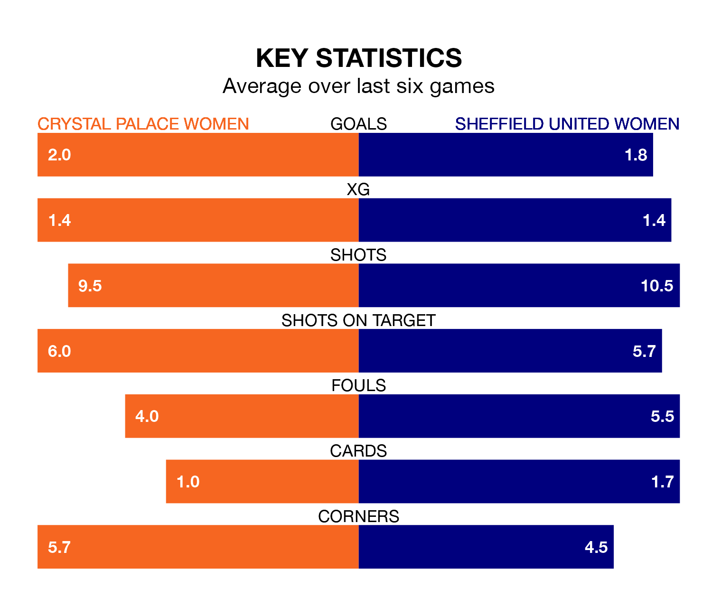

Crystal Palace Women host Sheffield United Women on Sunday at the VBS Community Stadium in the FA Women's Championship.
In their last league match, on February 18, Crystal Palace beat Blackburn Rovers Women 4-0 at home, with goals from Annabel Blanchard, Chloe Arthur, Isibeal Atkinson and Shanade Hopcroft.
Sheffield United lost, 2-1 away at Lewes Women on March 3, with Isobel Goodwin scoring their goals.
With 43 goals in 15 games so far this season, Crystal Palace are the league's highest scorers with 2.9 goals per game. And they are conceding fewer than average, letting in 17 goals at a rate of 1.1 per game.
Sheffield United, meanwhile, are average scorers, with 1.4 goals per game. They have conceded 1.6 goals per game.
In Elise Hughes, the home team have the league's most on-form striker so far this season. She has notched 14 goals in 15 appearances.
Her goal rate of one every 96 minutes is quicker than that of Goodwin, the Blades's top scorer with a goal every 109 minutes, and a total of 11 goals in 14 games.
Crystal Palace are second in the table after 15 games, of which they have won nine and drawn three, earning 30 points.
The visitors are six places behind Crystal Palace in eighth, with five wins and two draws putting them on 17 points.
In the last 10 years, Crystal Palace and Sheffield United have played each other on nine occasions. Crystal Palace won two of them, Sheffield United five, and they drew twice.
On average, Crystal Palace scored 0.7 goals and the Blades 1.9 in those matches.
Their last meeting was on March 12, when Crystal Palace won 1-0 away.
The hosts are in mixed form in the FA Women's Championship, with three wins and a draw from their last six games.
With two wins and a draw over that period, Sheffield United's form is worse – they have taken seven points from 18, compared to Crystal Palace's 10.
Updated: 09:34 (UTC), 08/03/24